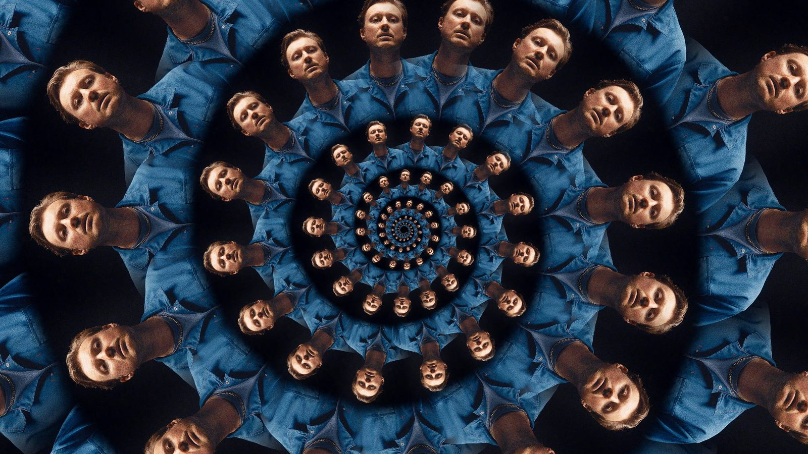
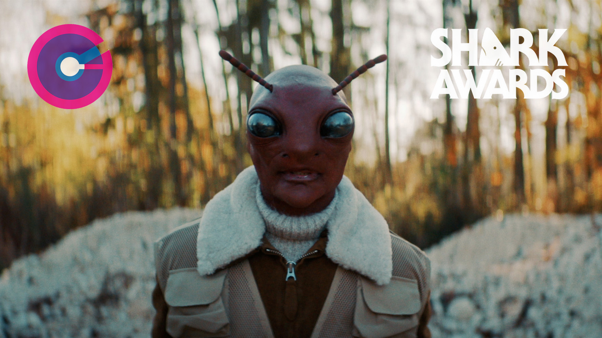
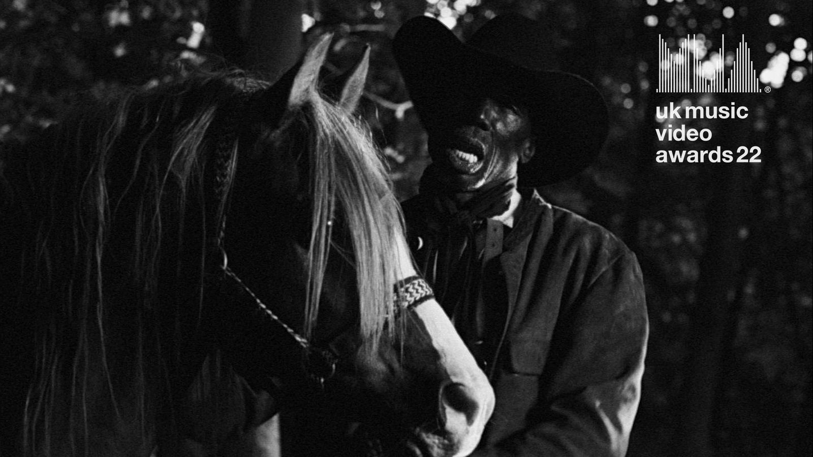
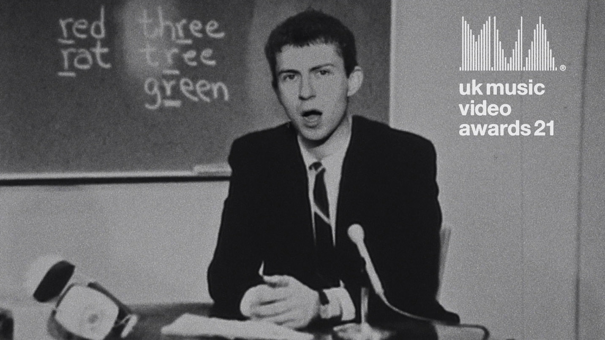
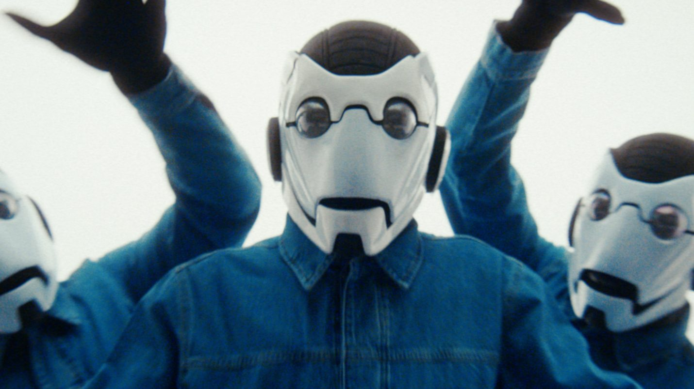
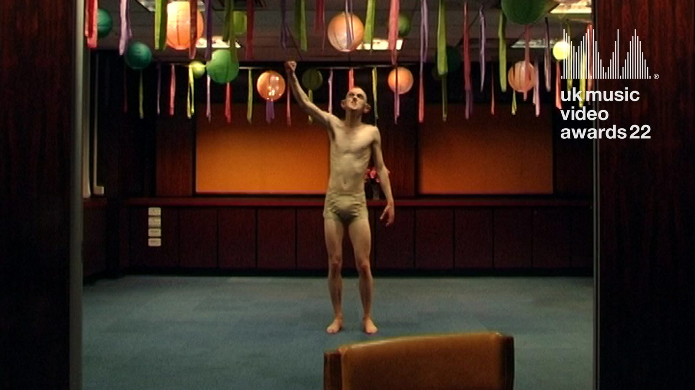

WePresent by WeTransfer
Fish Fingers (working title)
An open commission submission. After twelve years of music videos, commercials and branded work, this is my first narrative short — the thing I have been building toward the whole time.
I want to make it here, properly, with time to direct performance rather than solve logistics.
The film
A short paragraph here — the logline. What actually happens in the film.
Then the reason it has to exist. Not the plot: the reason.
Tone. What does it feel like in the room? What is the camera doing, and why?

Structure. What shape does it take. Does it escalate, loop, withhold?
The one sentence you want the audience to leave with.
The director
I am a British director and photographer based in Barcelona. For twelve years I have directed music videos, commercials and branded films — work that lives or dies on finding the one image that carries the whole idea.
The move into narrative is not a pivot away from that. It is the same instinct with more room: performance held long enough to matter, and a camera that understands why it is where it is.
I direct from stillness. I would rather hold on a face for eight seconds than cut around an idea. That discipline is what I want to bring to a short with actual dramatic stakes.
- 2026
- UKMVANominated — Best Dance / Electronic Video (International)
- 2024
- UK Music Video AwardsNominated — Best Choreography
- 2024
- 1.4 AwardsLonglist — Best Music Video
- 2023
- Creative CircleGold — Best Music Video Direction
- 2023
- Creative CircleSilver — Best Music Video Choreography
- 2023
- Creative CircleBronze — Best Music Video Story / Idea
- 2023
- Kinsale SharkWinner — Best Music Video, Low Budget
- 2023
- Berlin Music Video AwardsNominated — Best Performer
- 2022
- Shark AwardsNominated — Best Direction, International
- 2022
- Creative CircleSilver — Best Music Video Story
- 2022
- Creative CircleSilver — Best Music Video Direction
- 2022
- 1.4 AwardsShortlisted — Best Music Video
- 2022
- UK Music Video AwardsNominated — Best Performance in a Video
- 2021
- UK Music Video AwardsNominated — Best Rock Video, UK
Previous work
Six pieces that show the range this short will need — held performance, formal control, and a willingness to let an image stay unresolved.

Concorde
Black Country, New Road
Ты Же Не Знаешь Кто Я
Molchat Doma

Eat Men Eat
black midi

Nigel Hitter
Shame

Broken
Hot Chip

Dreams
Belief
Full catalogue at **maximkelly.com**.
Production
Produced by Friend (London) — friendlondon.tv.
We can move quickly and at the right scale for a first short: a small crew, real rehearsal time, and a producer who has made this kind of work before.
Happy to talk through budget, schedule and what a realistic first narrative short looks like from here.